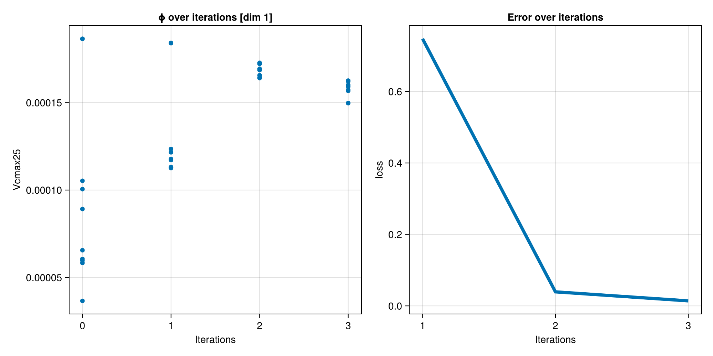
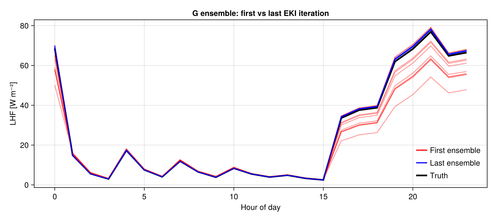
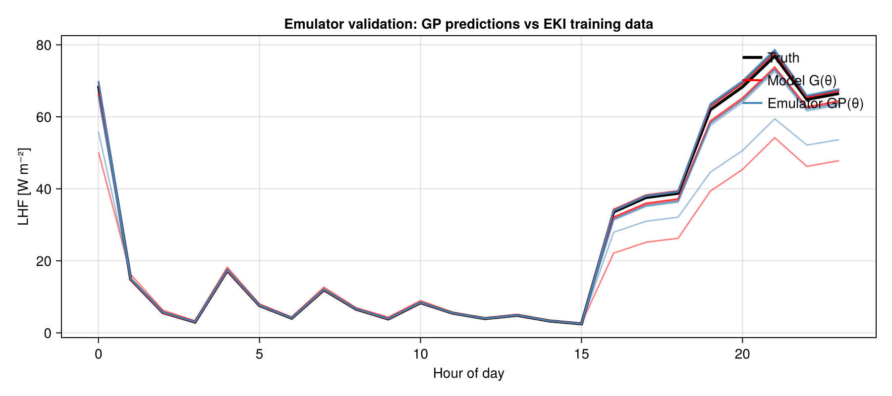
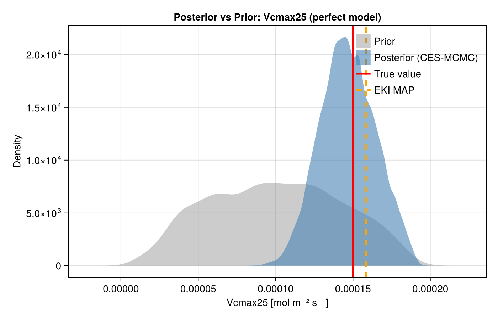
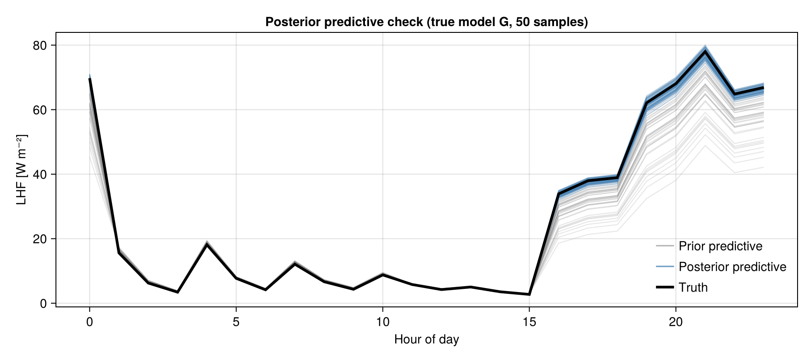

Perfect Model Site-Level CES Tutorial (Calibrate–Emulate–Sample)
This tutorial extends the perfect model calibration experiment to the full CalibrateEmulateSample.jl (CES) workflow. After EKI calibration converges to a MAP estimate, we train a Gaussian Process emulator on the ensemble trajectory, then run Markov Chain Monte Carlo (MCMC) using the model emulator to obtain the full posterior uncertainty distribution.
The CES workflow is motivated by the fact that land model runs are expensive. EKI calibration finds the MAP with O(ensemble size × iterations) model evaluations. Full Bayesian UQ via direct MCMC commonly requires in excess of O(10⁴) and up to O(10⁷) evaluations depending on the Markov chain mixing properties. CES solves this by:
- Calibrate: EKI explores parameter space efficiently and finds an optimal set of parameters.
- Emulate: Train a GP on the EKI trajectory in parameter space (one time expense; reusable).
- Sample: MCMC carried out using the GP in place of the model — each evaluation costs microseconds.
In this tutorial we calibrate Vcmax25 against synthetic LHF at US-MOz.
Overview
The tutorial covers:
- Setting up a land surface model for a FLUXNET site (US-MOz)
- Creating a synthetic observation dataset
- Calibrate: Ensemble Kalman Inversion (EKI)
- Emulate: Gaussian Process surrogate trained on the EKI trajectory
- Sample: RWMH-MCMC over the GP posterior
- Visualizing the posterior vs prior vs true value
Setup and Imports
using ClimaLand
using ClimaLand.Domains: Column
using ClimaLand.Canopy
using ClimaLand.Simulations
import ClimaLand.FluxnetSimulations as FluxnetSimulations
import ClimaLand.Parameters as LP
using ClimaDiagnostics: ClimaDiagnostics
import EnsembleKalmanProcesses as EKP
import EnsembleKalmanProcesses.ParameterDistributions as PD
using CalibrateEmulateSample.Emulators
using CalibrateEmulateSample.MarkovChainMonteCarlo
using CalibrateEmulateSample.Utilities
using LinearAlgebra: LinearAlgebra
using CairoMakie
CairoMakie.activate!()
using Statistics
using Logging
using Random: Random
using DatesConfiguration and Site Setup
We fix the random seed for reproducibility, choose single-precision floats, and load the default ClimaLand parameter set. The simulation targets the US-MOz FLUXNET site; its location and flux-tower height are looked up from the bundled site metadata.
rng_seed = 1234;
rng = Random.MersenneTwister(rng_seed);
const FT = Float32;
toml_dict = LP.create_toml_dict(FT);
site_ID = "US-MOz";
site_ID_val = FluxnetSimulations.replace_hyphen(site_ID);
(; time_offset, lat, long) =
FluxnetSimulations.get_location(FT, Val(site_ID_val));
(; atmos_h) = FluxnetSimulations.get_fluxtower_height(FT, Val(site_ID_val));
(start_date, stop_date) =
FluxnetSimulations.get_data_dates(site_ID, time_offset);
stop_date = DateTime(2010, 4, 1, 6, 30);
Δt = 450.0;Domain and Forcing Setup
The model runs on a single soil column 2 m deep with 10 vertical elements, located at the site's longitude and latitude.
zmin = FT(-2);
zmax = FT(0);
domain = Column(; zlim = (zmin, zmax), nelements = 10, longlat = (long, lat));Model Setup
function model(Vcmax25)
# Forcing is created inside the function so each model call is self-contained.
forcing = FluxnetSimulations.prescribed_forcing_fluxnet(
site_ID,
lat,
long,
time_offset,
atmos_h,
start_date,
toml_dict,
FT,
)
LAI = ClimaLand.Canopy.prescribed_lai_modis(
domain.space.surface,
start_date,
stop_date,
)
Vcmax25 = FT(Vcmax25)
ground = ClimaLand.PrognosticGroundConditions{FT}()
prognostic_land_components = (:canopy, :snow, :soil)
canopy_domain = ClimaLand.Domains.obtain_surface_domain(domain)
canopy_forcing = (; forcing.atmos, forcing.radiation, ground)
photosyn_defaults =
Canopy.clm_photosynthesis_parameters(canopy_domain.space.surface)
photosynthesis = Canopy.FarquharModel{FT}(
canopy_domain,
toml_dict;
photosynthesis_parameters = (;
fractional_c3 = photosyn_defaults.fractional_c3,
Vcmax25,
),
)
conductance = Canopy.MedlynConductanceModel{FT}(
canopy_domain,
toml_dict;
g1 = FT(141),
)
canopy = ClimaLand.Canopy.CanopyModel{FT}(
canopy_domain,
canopy_forcing,
LAI,
toml_dict;
photosynthesis,
prognostic_land_components,
conductance,
)
land_model = LandModel{FT}(
forcing,
LAI,
toml_dict,
domain,
Δt;
prognostic_land_components,
canopy,
)
set_ic! = FluxnetSimulations.make_set_fluxnet_initial_conditions(
site_ID,
start_date,
time_offset,
land_model,
)
output_vars = ["shf", "lhf"]
diagnostics = ClimaLand.default_diagnostics(
land_model,
start_date;
output_writer = ClimaDiagnostics.Writers.DictWriter(),
output_vars,
reduction_period = :hourly,
)
simulation = Simulations.LandSimulation(
start_date,
stop_date,
Δt,
land_model;
set_ic!,
user_callbacks = (),
diagnostics,
)
solve!(simulation)
return simulation
end
function get_lhf(simulation)
return ClimaLand.Diagnostics.diagnostic_as_vectors(
simulation.diagnostics[1].output_writer,
"lhf_1h_average",
)
end
function get_diurnal_average(var, start_date, spinup_date)
(times, data) = var
model_dates = if times isa Vector{DateTime}
times
else
Second.(getproperty.(times, :counter)) .+ start_date
end
spinup_idx = findfirst(spinup_date .<= model_dates)
model_dates = model_dates[spinup_idx:end]
data = data[spinup_idx:end]
hour_of_day = Hour.(model_dates)
mean_by_hour = [mean(data[hour_of_day .== Hour(i)]) for i in 0:23]
return mean_by_hour
end
function G(Vcmax25)
simulation = model(Vcmax25)
lhf = get_lhf(simulation)
observation =
Float64.(
get_diurnal_average(
lhf,
simulation.start_date,
simulation.start_date + Day(20),
),
)
return observation
endG (generic function with 1 method)Step 1 — Calibrate (Ensemble Kalman Inversion)
Generate synthetic "truth" from the model at a known true parameter value, then run EKI to recover it from noisy observations.
The true value is set to 1.5e-4 mol m⁻² s⁻¹ (150 μmol m⁻² s⁻¹) — one standard deviation above the prior mean of 1e-4. This is within the physically realistic range of Vcmax25 for C3 vegetation, and a regime in which the forward map G (diurnal LHF) responds strongly to Vcmax25, so EKI can distinguish the true parameter from the prior center.
true_Vcmax25 = 1.5e-4;
observations = G(true_Vcmax25);The noise variance is used for both EKI and the GP emulator likelihood so that both steps see a consistent observation error model. Here σ = √noise_var ≈ 5 W m⁻² (about 7% of the ~70 W m⁻² synthetic peak LHF), large enough to produce visible ensemble spread in the plots while still allowing EKI to recover the true value.
noise_var = 25.0;
noise_covariance = noise_var * EKP.I;We place a constrained Gaussian prior on Vcmax25 bounded to [0, 2e-4], then draw the initial ensemble and run three EKI iterations.
prior = PD.constrained_gaussian("Vcmax25", 1e-4, 5e-5, 0, 2e-4);
ensemble_size = 10;
N_iterations = 3;
initial_ensemble = EKP.construct_initial_ensemble(rng, prior, ensemble_size);
ensemble_kalman_process = EKP.EnsembleKalmanProcess(
initial_ensemble,
observations,
noise_covariance,
EKP.Inversion();
scheduler = EKP.DataMisfitController(;
terminate_at = Inf,
on_terminate = "continue",
),
rng,
);
Logging.with_logger(SimpleLogger(devnull, Logging.Error)) do
for i in 1:N_iterations
println("EKI iteration $i / $N_iterations")
params_i = EKP.get_ϕ_final(prior, ensemble_kalman_process)
G_ens = hcat([G(params_i[:, j]...) for j in 1:ensemble_size]...)
EKP.update_ensemble!(ensemble_kalman_process, G_ens)
end
end
eki_map = EKP.get_ϕ_mean_final(prior, ensemble_kalman_process)[1];
@info "EKI MAP estimate: Vcmax25 = $eki_map (true: $true_Vcmax25)"EKI iteration 1 / 3
EKI iteration 2 / 3
EKI iteration 3 / 3
[ Info: EKI MAP estimate: Vcmax25 = 0.0001584098587400869 (true: 0.00015)
We now plot two calibration diagnostics: the parameter convergence and error decay over iterations, and the forward-model ensemble compared against the synthetic observations.
dim_size = sum(length.(EKP.batch(prior)))
fig = CairoMakie.Figure(; size = ((dim_size + 1) * 500, 500))
for i in 1:dim_size
EKP.Visualize.plot_ϕ_over_iters(
fig[1, i],
ensemble_kalman_process,
prior,
i,
)
end
EKP.Visualize.plot_error_over_iters(
fig[1, dim_size + 1],
ensemble_kalman_process,
)
CairoMakie.save("perfect_model_ces_params_and_error.png", fig);
fig2 = CairoMakie.Figure(; size = (900, 400))
first_G = EKP.get_g(ensemble_kalman_process, 1)
last_iter = EKP.get_N_iterations(ensemble_kalman_process)
last_G = EKP.get_g(ensemble_kalman_process, last_iter)
ax2 = Axis(
fig2[1, 1];
title = "G ensemble: first vs last EKI iteration",
xlabel = "Hour of day",
ylabel = "LHF [W m⁻²]",
)
lines!(ax2, 0:23, observations; color = :black, linewidth = 3)
for g in eachcol(first_G)
lines!(ax2, 0:23, g; color = (:red, 0.4), linewidth = 1.5)
end
for g in eachcol(last_G)
lines!(ax2, 0:23, g; color = (:blue, 0.4), linewidth = 1.5)
end
axislegend(
ax2,
[
LineElement(; color = :red, linewidth = 2),
LineElement(; color = :blue, linewidth = 2),
LineElement(; color = :black, linewidth = 3),
],
["First ensemble", "Last ensemble", "Truth"];
position = :rb,
framevisible = false,
)
CairoMakie.resize_to_layout!(fig2)
CairoMakie.save("perfect_model_ces_G_first_last.png", fig2);
Step 2 — Emulate (Gaussian Process Surrogate)
The EKI calibration produced (parameter, G(parameter)) pairs for all ensemble members across all iterations. We now train a GP emulator on this dataset. The surrogate maps from parameter space (1D) to observation space (24D, diurnal LHF) and is orders of magnitude cheaper to evaluate than the land model.
n_iter_used = EKP.get_N_iterations(ensemble_kalman_process);
@info "Building GP emulator from $n_iter_used EKI iterations ($(n_iter_used * ensemble_size) training points)..."[ Info: Building GP emulator from 3 EKI iterations (30 training points)...
First we extract all (θ_unconstrained, G(θ)) pairs from the EKP object; these are the training data for the emulator.
input_output_pairs =
Utilities.get_training_points(ensemble_kalman_process, n_iter_used);[ Info: extracting iterations 1:3 from EnsembleKalmanProcess
Next we build, configure, and optimize the GP emulator. GPJL uses GaussianProcesses.jl (squared-exponential kernel by default). The decorrelator inside Emulator projects the 24-dimensional output onto its principal components so that each GP only needs to model a one-dimensional output. encoder_kwargs bundles the noise covariance and prior covariance from the calibration step — the recommended way to configure the Emulator encoder.
encoder_kwargs = Utilities.encoder_kwargs_from(ensemble_kalman_process, prior);
gppackage = GPJL();
gauss_proc = GaussianProcess(gppackage; noise_learn = false);
emulator = Emulator(gauss_proc, input_output_pairs; encoder_kwargs);
Logging.with_logger(SimpleLogger(devnull, Logging.Error)) do
optimize_hyperparameters!(emulator)
end
@info "GP emulator trained."┌ Info: Detected fewer `samples_out` (3) than `samples_in` (4) and `dt` (4). Input-output structure vectors will be created from 3 samples.
│ This commonly occurs when samples are built from `get_u(ekp), get_g(ekp)`.
│ The final interation of output samples, (e.g., from evaluating `g=forward_map_ensemble(get_ϕ_final(ekp)`) can be provided by `encoder_kwargs_from(ekp, prior; final_samples_out=g)`
└
[ Info: Initialize encoding of data: "in" with Decorrelator: decorrelate_with=sample_cov
┌ Warning: SVD representation is efficient when estimating high-dimensional covariance with few samples.
│ here # samples is 30, while the space dimension is 1, and representation will be inefficient.
└ @ EnsembleKalmanProcesses ~/.julia/packages/EnsembleKalmanProcesses/1ArOR/src/Observations.jl:203
[ Info: Initialize encoding of data: "out" with Decorrelator: decorrelate_with=structure_mat
Using default squared exponential kernel, learning length scale and variance parameters
Using default squared exponential kernel: Type: GaussianProcesses.SEArd{Float64}, Params: [-0.0, 0.0]
kernel in GaussianProcess:
Type: GaussianProcesses.SEArd{Float64}, Params: [-0.0, 0.0]
created GP: 1
kernel in GaussianProcess:
Type: GaussianProcesses.SEArd{Float64}, Params: [-0.0, 0.0]
created GP: 2
kernel in GaussianProcess:
Type: GaussianProcesses.SEArd{Float64}, Params: [-0.0, 0.0]
created GP: 3
kernel in GaussianProcess:
Type: GaussianProcesses.SEArd{Float64}, Params: [-0.0, 0.0]
created GP: 4
kernel in GaussianProcess:
Type: GaussianProcesses.SEArd{Float64}, Params: [-0.0, 0.0]
created GP: 5
kernel in GaussianProcess:
Type: GaussianProcesses.SEArd{Float64}, Params: [-0.0, 0.0]
created GP: 6
kernel in GaussianProcess:
Type: GaussianProcesses.SEArd{Float64}, Params: [-0.0, 0.0]
created GP: 7
kernel in GaussianProcess:
Type: GaussianProcesses.SEArd{Float64}, Params: [-0.0, 0.0]
created GP: 8
kernel in GaussianProcess:
Type: GaussianProcesses.SEArd{Float64}, Params: [-0.0, 0.0]
created GP: 9
kernel in GaussianProcess:
Type: GaussianProcesses.SEArd{Float64}, Params: [-0.0, 0.0]
created GP: 10
kernel in GaussianProcess:
Type: GaussianProcesses.SEArd{Float64}, Params: [-0.0, 0.0]
created GP: 11
kernel in GaussianProcess:
Type: GaussianProcesses.SEArd{Float64}, Params: [-0.0, 0.0]
created GP: 12
kernel in GaussianProcess:
Type: GaussianProcesses.SEArd{Float64}, Params: [-0.0, 0.0]
created GP: 13
kernel in GaussianProcess:
Type: GaussianProcesses.SEArd{Float64}, Params: [-0.0, 0.0]
created GP: 14
kernel in GaussianProcess:
Type: GaussianProcesses.SEArd{Float64}, Params: [-0.0, 0.0]
created GP: 15
kernel in GaussianProcess:
Type: GaussianProcesses.SEArd{Float64}, Params: [-0.0, 0.0]
created GP: 16
kernel in GaussianProcess:
Type: GaussianProcesses.SEArd{Float64}, Params: [-0.0, 0.0]
created GP: 17
kernel in GaussianProcess:
Type: GaussianProcesses.SEArd{Float64}, Params: [-0.0, 0.0]
created GP: 18
kernel in GaussianProcess:
Type: GaussianProcesses.SEArd{Float64}, Params: [-0.0, 0.0]
created GP: 19
kernel in GaussianProcess:
Type: GaussianProcesses.SEArd{Float64}, Params: [-0.0, 0.0]
created GP: 20
kernel in GaussianProcess:
Type: GaussianProcesses.SEArd{Float64}, Params: [-0.0, 0.0]
created GP: 21
kernel in GaussianProcess:
Type: GaussianProcesses.SEArd{Float64}, Params: [-0.0, 0.0]
created GP: 22
kernel in GaussianProcess:
Type: GaussianProcesses.SEArd{Float64}, Params: [-0.0, 0.0]
created GP: 23
kernel in GaussianProcess:
Type: GaussianProcesses.SEArd{Float64}, Params: [-0.0, 0.0]
created GP: 24
optimized hyperparameters of GP: 1
Type: GaussianProcesses.SEArd{Float64}, Params: [0.5147983918419826, 0.4505983331365189]
optimized hyperparameters of GP: 2
Type: GaussianProcesses.SEArd{Float64}, Params: [-0.027822253952847206, -11.495161671163704]
optimized hyperparameters of GP: 3
Type: GaussianProcesses.SEArd{Float64}, Params: [-0.012570195654667906, -11.50747374977696]
optimized hyperparameters of GP: 4
Type: GaussianProcesses.SEArd{Float64}, Params: [-0.004130823313078953, -11.5009703322192]
optimized hyperparameters of GP: 5
Type: GaussianProcesses.SEArd{Float64}, Params: [-0.013165342130325613, -11.506398832722448]
optimized hyperparameters of GP: 6
Type: GaussianProcesses.SEArd{Float64}, Params: [-0.0031696210951797053, -11.50276052278071]
optimized hyperparameters of GP: 7
Type: GaussianProcesses.SEArd{Float64}, Params: [-0.0010353572412987034, -11.486578639692926]
optimized hyperparameters of GP: 8
Type: GaussianProcesses.SEArd{Float64}, Params: [-0.012602828701299983, -11.507957993537172]
optimized hyperparameters of GP: 9
Type: GaussianProcesses.SEArd{Float64}, Params: [-0.0020696359526602265, -11.496604038947076]
optimized hyperparameters of GP: 10
Type: GaussianProcesses.SEArd{Float64}, Params: [-0.004149431349865843, -11.508295936753067]
optimized hyperparameters of GP: 11
Type: GaussianProcesses.SEArd{Float64}, Params: [-0.003764892458610106, -11.508004330546143]
optimized hyperparameters of GP: 12
Type: GaussianProcesses.SEArd{Float64}, Params: [0.00016817043897912967, -11.478363627524068]
optimized hyperparameters of GP: 13
Type: GaussianProcesses.SEArd{Float64}, Params: [0.0005838377140238531, -11.474749193873821]
optimized hyperparameters of GP: 14
Type: GaussianProcesses.SEArd{Float64}, Params: [0.0002349014535239364, -11.478571564924133]
optimized hyperparameters of GP: 15
Type: GaussianProcesses.SEArd{Float64}, Params: [0.0007151552579599917, -11.474388637148678]
optimized hyperparameters of GP: 16
Type: GaussianProcesses.SEArd{Float64}, Params: [0.0007429473522663511, -11.473236638417697]
optimized hyperparameters of GP: 17
Type: GaussianProcesses.SEArd{Float64}, Params: [0.3390635764848374, -0.407818302643259]
optimized hyperparameters of GP: 18
Type: GaussianProcesses.SEArd{Float64}, Params: [0.3781906951985617, -0.2608534877282287]
optimized hyperparameters of GP: 19
Type: GaussianProcesses.SEArd{Float64}, Params: [0.3786227225414117, -0.25224963570223036]
optimized hyperparameters of GP: 20
Type: GaussianProcesses.SEArd{Float64}, Params: [0.6213756342600444, 0.8121204685165317]
optimized hyperparameters of GP: 21
Type: GaussianProcesses.SEArd{Float64}, Params: [0.6115332871417922, 0.8292971560969081]
optimized hyperparameters of GP: 22
Type: GaussianProcesses.SEArd{Float64}, Params: [0.6184962617107059, 0.8193228997296634]
optimized hyperparameters of GP: 23
Type: GaussianProcesses.SEArd{Float64}, Params: [0.4849372843146488, 0.4226534133650565]
optimized hyperparameters of GP: 24
Type: GaussianProcesses.SEArd{Float64}, Params: [0.49919818386134535, 0.4473039106735735]
[ Info: GP emulator trained.
Emulator Validation
Before running MCMC, verify that the GP accurately reproduces the model outputs on the EKI training data. Red curves are the actual G(θ) values; blue curves are the emulator's predictions at the same inputs. Close overlap confirms the surrogate is fit for purpose before sampling begins.
train_in = EKP.DataContainers.get_inputs(input_output_pairs);
train_out = EKP.DataContainers.get_outputs(input_output_pairs);
emul_pred_train, _ = Emulators.predict(emulator, train_in);
n_train = size(train_in, 2);
val_idx = rand(rng, 1:n_train, min(10, n_train));
fig_val = CairoMakie.Figure(; size = (900, 400))
ax_val = Axis(
fig_val[1, 1];
title = "Emulator validation: GP predictions vs EKI training data",
xlabel = "Hour of day",
ylabel = "LHF [W m⁻²]",
)
lines!(
ax_val,
0:23,
observations;
color = :black,
linewidth = 3,
label = "Truth",
)
for j in val_idx
lines!(ax_val, 0:23, train_out[:, j]; color = (:red, 0.5), linewidth = 1.5)
end
for j in val_idx
lines!(
ax_val,
0:23,
emul_pred_train[:, j];
color = (:steelblue, 0.5),
linewidth = 1.5,
)
end
axislegend(
ax_val,
[
LineElement(; color = :black, linewidth = 3),
LineElement(; color = :red, linewidth = 2),
LineElement(; color = :steelblue, linewidth = 2),
],
["Truth", "Model G(θ)", "Emulator GP(θ)"];
position = :rt,
framevisible = false,
)
CairoMakie.resize_to_layout!(fig_val)
CairoMakie.save("perfect_model_ces_emulator_validation.png", fig_val);
Step 3 — Sample (MCMC Posterior)
Run Random Walk Metropolis-Hastings MCMC over the trained GP emulator. Each likelihood evaluation calls the GP instead of the land model — enabling 50 000 samples in seconds rather than years.
We initialize the MCMC chain at the EKI posterior mean (in unconstrained space) and wrap it in an MCMCWrapper tied to the trained emulator.
init_params = EKP.get_u_mean_final(ensemble_kalman_process);
mcmc = MCMCWrapper(
RWMHSampling(),
Float64.(observations),
prior,
emulator;
init_params,
);We first tune the step size to target a ~0.2 acceptance rate, then draw the samples. init_stepsize is set near the expected value so the doubling search converges in few steps. Both calls are wrapped to suppress their progress bars, which otherwise clutter the rendered tutorial.
init_stepsize = 1.0;
n_samples = 50_000;
discard_initial = 2_000;
new_step = redirect_stderr(devnull) do
Logging.with_logger(SimpleLogger(devnull, Logging.Error)) do
optimize_stepsize(mcmc; init_stepsize, N = 2_000, discard_initial = 0)
end
end;
@info "MCMC step size: init=$init_stepsize learned=$new_step"
chain = redirect_stderr(devnull) do
Logging.with_logger(SimpleLogger(devnull, Logging.Error)) do
MarkovChainMonteCarlo.sample(
mcmc,
n_samples;
stepsize = new_step,
discard_initial,
)
end
end;
posterior = MarkovChainMonteCarlo.get_posterior(mcmc, chain);0 starting params: encoded_param_1: 0.436
1 stepsize: 1 acc rate: 0.487
params: encoded_param_1: 0.128
Set sampler to new stepsize: 2
2 stepsize: 2 acc rate: 0.29
params: encoded_param_1: 0.208
Returning optimized stepsize: 2
[ Info: MCMC step size: init=1.0 learned=2.0
Finally we transform the samples from unconstrained to constrained (physical) space and summarize the posterior.
constrained_posterior = Emulators.transform_unconstrained_to_constrained(
prior,
MarkovChainMonteCarlo.get_distribution(posterior),
);
post_Vcmax25 = vec(constrained_posterior["Vcmax25"]);
post_mean = mean(post_Vcmax25);
post_std = std(post_Vcmax25);
ci_lo, ci_hi = quantile(post_Vcmax25, [0.025, 0.975]);
@info "Posterior Vcmax25: mean=$(round(post_mean; sigdigits=4)) std=$(round(post_std; sigdigits=3))"
@info "95% CI: [$(round(ci_lo; sigdigits=4)), $(round(ci_hi; sigdigits=4))]"
@info "EKI MAP: $(round(eki_map; sigdigits=4)) true: $true_Vcmax25"[ Info: Posterior Vcmax25: mean=0.0001467 std=1.79e-5
[ Info: 95% CI: [0.0001124, 0.0001816]
[ Info: EKI MAP: 0.0001584 true: 0.00015
UQ Results: Posterior vs Prior vs True Value
Here we show the key results from this tutorial. First, we have obtained a probability distribution for the parameter we calibrated, which gives us a quantified uncertainty in its value. Second, the posterior is much narrower than the prior, indicating that the data provided useful constraints on this parameter. Additionally, the posterior is centered near the true value, demonstrating successful uncertainty quantification. The EKI MAP gives a single point estimate; MCMC over the emulator gives the full posterior credible interval.
fig3 = CairoMakie.Figure(; size = (700, 450))
ax3 = Axis(
fig3[1, 1];
title = "Posterior vs Prior: Vcmax25 (perfect model)",
xlabel = "Vcmax25 [mol m⁻² s⁻¹]",
ylabel = "Density",
)
# Sample the prior for comparison.
rng_prior = Random.MersenneTwister(99)
prior_ens = EKP.construct_initial_ensemble(rng_prior, prior, 5_000)
prior_constrained = EKP.transform_unconstrained_to_constrained(prior, prior_ens)
density!(ax3, vec(prior_constrained); label = "Prior", color = (:grey, 0.4))
density!(
ax3,
post_Vcmax25;
label = "Posterior (CES-MCMC)",
color = (:steelblue, 0.6),
)
vlines!(
ax3,
[true_Vcmax25];
color = :red,
linewidth = 2.5,
label = "True value",
)
vlines!(
ax3,
[eki_map];
color = :orange,
linewidth = 2.5,
linestyle = :dash,
label = "EKI MAP",
)
axislegend(ax3; position = :rt, framevisible = false)
CairoMakie.resize_to_layout!(fig3)
CairoMakie.save("perfect_model_ces_posterior.png", fig3);
Posterior Predictive Check
The Emulator Validation section above checked that the emulator reproduces the true model output (in an L² sense) on the EKI training points. That is necessary but not sufficient: a small output error can still bias the inferred posterior. The posterior predictive check closes this gap by pushing posterior samples back through the TRUE forward model G and asking whether the observations are plausible under them.
Each evaluation of G is a full land-model run, so we do not recompute this during the docs build. The figure below was generated offline with 50 posterior and 50 prior samples: it shows the posterior predictive spread (blue) collapsing around the truth (black) relative to the much wider prior predictive (gray) — the constraint that calibration buys us. To regenerate it (optionally with more samples), run:
n_pp = 50
post_unc = MarkovChainMonteCarlo.get_distribution(posterior)["Vcmax25"]
pp_idx = rand(rng, 1:size(post_unc, 2), n_pp)
post_constrained =
EKP.transform_unconstrained_to_constrained(prior, post_unc[:, pp_idx])
prior_unc = EKP.construct_initial_ensemble(rng, prior, n_pp)
prior_constrained =
EKP.transform_unconstrained_to_constrained(prior, prior_unc)
fig = CairoMakie.Figure(; size = (900, 400))
ax = Axis(fig[1, 1]; xlabel = "Hour of day", ylabel = "LHF [W m⁻²]")
for j in 1:n_pp # prior predictive
lines!(ax, 0:23, G(prior_constrained[1, j]); color = (:gray, 0.2))
end
for j in 1:n_pp # posterior predictive
lines!(ax, 0:23, G(post_constrained[1, j]); color = (:steelblue, 0.35))
end
lines!(ax, 0:23, observations; color = :black, linewidth = 3)pp_img = "perfect_model_ces_predictive_offline.png";
pp_src = joinpath("..", "..", "tutorials", "calibration", pp_img);
isfile(pp_src) && cp(pp_src, pp_img; force = true);
This page was generated using Literate.jl.